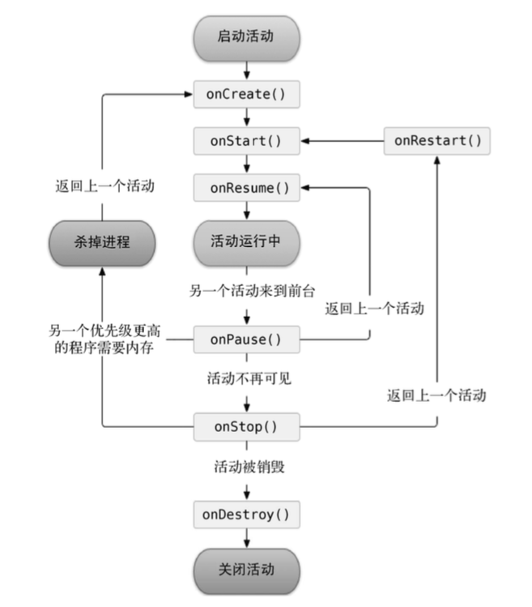

android的四大组件之一，它是一种可以包含用户界面的组件，主要用于 和用户进行交互。
基本用法
创建
- 在javac包下，创建一个activity
- 在res/layout下创建布局文件。
- 在AndroidManifest.xml内注册active活动
销毁
- finish()
Intent跳转
跳转方式
显式
1
2
3
4
5
public void onClick(View v) {
Intent intent = new Intent(FirstActivity.this, SecondActivity.class);
startActivity(intent);
}隐式
1
2
3
4
5
6
public void onClick(View v) {
Intent intent = new Intent("com.example.shifeng.helloworld.ACTION_START");
intent.addCategory("com.example.shifeng.helloworld.MY_CATEGORY");
startActivity(intent);
}隐式需要在AndroidManifest.xml对应的activity内添加action和category
1
2
3
4
5
6
7<activity android:name=".SecondActivity">
<intent-filter>
<action android:name="com.example.shifeng.helloworld.ACTION_START" />
<category android:name="android.intent.category.DEFAULT" />
<category android:name="com.example.shifeng.helloworld.MY_CATEGORY"/>
</intent-filter>
</activity>
跳转传值
使用intent对象下的putExtra()方法，第一个参数是键，用于后面从 Intent 对象中取值，第二个参数才是真正要传递的数据。
- 传递
1
2
3
4
5
6
7
public void onClick(View v) {
String data = "Hello SecondActivity";
Intent intent = new Intent(FirstActivity.this, SecondActivity.class);
intent.putExtra("extra_data", data);
startActivity(intent);
} - 取出取出有很多方法
1
2
3
4
5
6
7
8
protected void onCreate(Bundle savedInstanceState) {
super.onCreate(savedInstanceState);
setContentView(R.layout.second_layout);
Intent intent = getIntent();
String data = intent.getStringExtra("extra_data");
Log.d("SecondActivity", data);
}- getStringExtra
- getIntExtra
- getBooleanExtra
等等，是根据类型来取值，切记要类型对
跳转到别的应用
AndroidManifest.xml
1 | <activity android:name=".ThirdActivity"> |
- 打开浏览器
1
2
3
4
5
6
public void onClick(View v) {
Intent intent = new Intent(Intent.ACTION_VIEW);
intent.setData(Uri.parse("https://www.baidu.com"));
startActivity(intent);
} - 打电话
1
2
3
4
5
6
public void onClick(View v) {
Intent intent = new Intent(Intent.ACTION_VIEW);
intent.setData(Uri.parse("tel:10086"));
startActivity(intent);
}
activity的生命周期
完整生存期
- onCreate() 活动第一次被创建，常用作加载布局、绑定事件等。
- onDestroy() 活动被销毁之前
- onRestart() 活动由停止状态变为运行状态之前
可见生存期
- onStart() 活动由不可见变为可见
- onStop() 活动完全不可见，如果启动的新活动是一个对话框式的活动，则不会执行
前台生存期
- onResume() 活动准备好和用户进行交互
- onPause() 系统准备去启动或者恢复另一个活动，如果启动的新活动是一个对话框式的活动，则会执行
启动模式
在AndroidManifest.xml 中添加
1 | android:launchMode="singleTop" |
standard (默认)
每当启 动一个新的活动，它就会在返回栈中入栈，并处于栈顶的位置。
系统不会在乎这个活动是否已经在返回栈中存在，每次启动都会创建该活动的一个新的实例。
singleTop
在启动活动时如果发现返回栈的栈顶已经是该活动，则认为可以直接使用它，不会再创建新的活动实例。
singleTask
每次启动该活动时系统首先会在返回栈中检查是否存在该活动的实例，如果发现已经存在则直接使用该实例，并把在这个活动之上的所有活动统统出栈，如果没有发现就会创建一个新的活动实例。
singleInstance
在这种模式下会有一个单独的返回栈来管理这个活动，不管是哪个应用程序来访问这个活动，都 共用的同一个返回栈，也就解决了共享活动实例的问题。
小技巧
知晓当前活动名称
1 | Log.d("BaseActivity", getClass().getSimpleName()); |
随时退出应用
新建一个 ActivityCollector 类作为活动管理器
1 | public class ActivityCollector { |
activity中onCreate周期添加， onDestroy周期删除
1 | public class BaseActivity extends AppCompatActivity { |
直接在任何地方退出调用活动管理器类的finishAll方法
1 | public class ThirdActivity extends BaseActivity { |
添加activity启动方法
假设要由FirstActivity到SecondActivity传值
FirstActivity
1
SecondActivity.actionStart(FirstActivity.this, "data1", "data2");
SecondActivity
1
2
3
4
5
6
7
8public class SecondActivity extends BaseActivity {
public static void actionStart(Context context, String data1, String data2) {
Intent intent = new Intent(context, SecondActivity.class);
intent.putExtra("param1", data1);
intent.putExtra("param2", data2);
context.startActivity(intent);
}
}